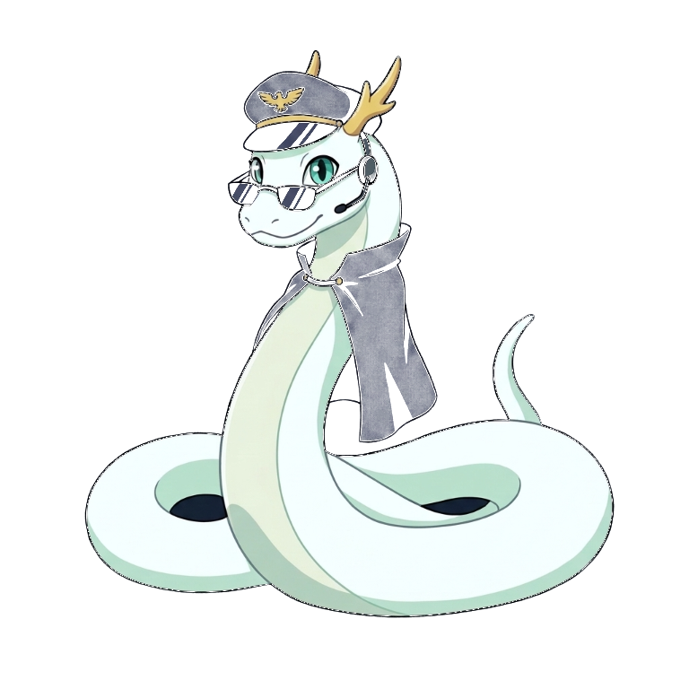

「任務開始」を押すと、位置情報と画面の点灯を許可する確認が出ます。マナーモードを解除して、音量を上げてください。
位置情報：-
オフライン用の声：確認中
音声：VOICEVOX:波音リツ／VOICEVOX:後鬼
家の Wi-Fi につないで、前の晩までに開いてください。声と映像をスマホに保存するので、山の中で電波がなくても動きます。
AirDrop などで受け取った写真を選ぶと、撮った場所と時刻から、どの任務の写真かを自動で振り分けます。